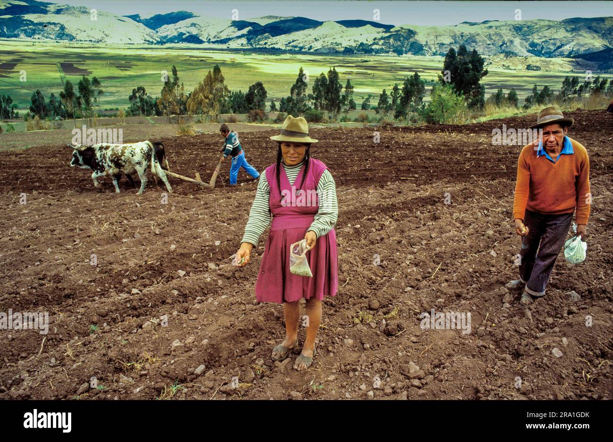
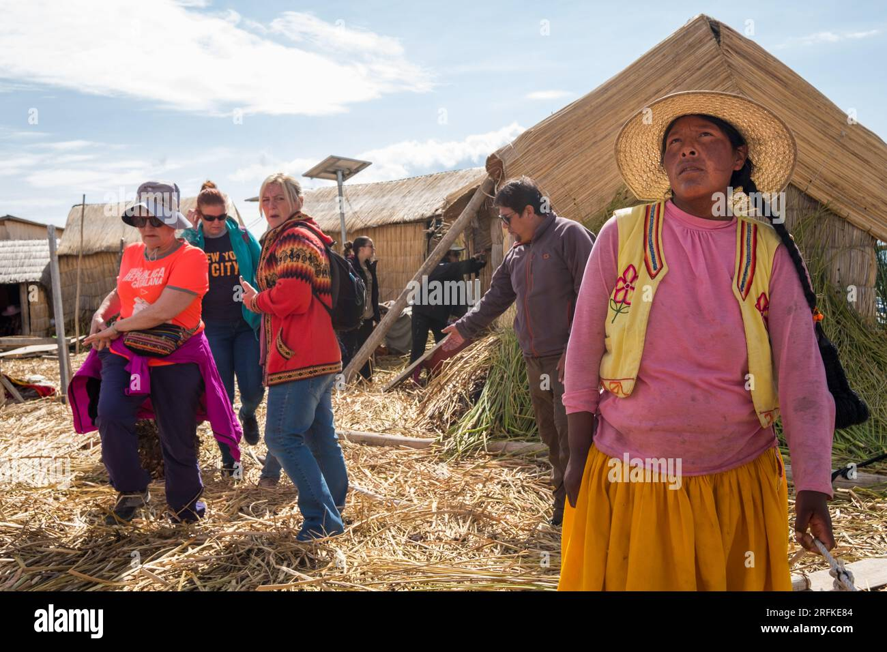

Key Economic Roles

Fishing
At dawn, families head out in reed boats to catch trout and carachi. This is the foundation of daily sustenance and trade.
Image: Titicaca Journeys

Farming
Some Uros families cultivate maize and potatoes on nearby land for trade and food security.
Image: Alamy

Tourism
Home tours, crafts, and performances allow cultural exchange while boosting household income.
Image: Alamy
Barter & Trade
Fish and handmade goods are traded for clothing, food, and tools from the mainland.
Image: LakeTiticaca.org